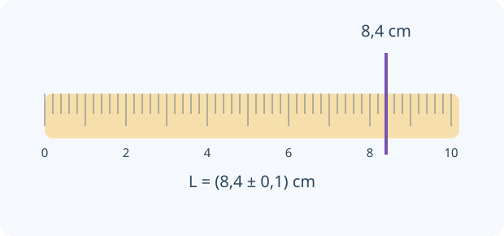

Una idea, un modelo y una experiencia para contrastarlo. Comprobá cada explicación y volvé a intentarlo cuando lo necesites.
0 de 4 lecciones comprobadasAvance guardado en este navegador
Contenidos y correspondencia con el programa
Unidades SI, notación científica y análisis dimensional
Resolución, repetibilidad, incertidumbre y cifras significativas
Tablas, gráficos, pendiente y estimación de relaciones
Diseño de experiencias, variables y comunicación de resultados
Normas OAF 2022, programa esquemático y contenidos conceptuales/procedimentales, pp. 16–17. Ver fuente y alcance.
01
COMPRENDÉ Y COMPROBÁ
Tu ruta de estudio.
LECCIÓN 1 / 4 · LEÉ, APLICÁ Y COMPROBÁ
Unidades que comprueban una ecuación
Empezá desde la idea.
Medir es comparar una magnitud con una unidad elegida. El número solo no alcanza: 3 metros y 3 segundos describen cosas diferentes. Antes de calcular, anotá qué representa cada símbolo y qué unidades deben quedar en el resultado.

Lectura de ejemplo con divisiones de 0,2 cm y criterio instrumental de media división. La incertidumbre debe justificarse.
Una magnitud combina número y unidad. En el SI, longitud se expresa en m, masa en kg y tiempo en s. Convertir conserva la magnitud: 36 km/h son 10 m/s. Escribí factores que valgan uno para que se cancelen unidades.
El análisis dimensional detecta ecuaciones imposibles, pero una ecuación dimensionalmente correcta todavía puede tener un factor numérico incorrecto. Distinguí dirección y sentido en vectores: rapidez no es velocidad, y distancia no es desplazamiento.
v = Δx/Δt → m/s · a = Δv/Δt → m/s²
INTENTÁ RESOLVER ANTES DE MIRAR
Un móvil recorre 72 km en 2 h.
Tu desafío: Calculá la rapidez y expresala en m/s mostrando los factores de conversión.
Ver el ejemplo resuelto paso a paso
Su rapidez media es 36 km/h.
36 × 1000/3600 = 10 m/s.
LECCIÓN 2 / 4 · LEÉ, APLICÁ Y COMPROBÁ
Un número medido tiene un margen
Empezá desde la idea.
El borde de un objeto no siempre coincide exactamente con una marca. Una lectura es una estimación respaldada por instrumento y procedimiento. Repetir ayuda a conocer dispersión; revisar calibración ayuda a reconocer un desplazamiento sistemático.
La resolución es el menor cambio que distingue el instrumento. Repetir una medición permite detectar dispersión, pero no elimina una calibración incorrecta. Error e incertidumbre no son lo mismo: la incertidumbre expresa un intervalo razonable, no un fallo moral ni un error conocido exacto.
En una lectura analógica ideal puede usarse media división como estimación instrumental, si el procedimiento lo justifica. En un instrumento digital se considera su resolución y especificación. Declarar el criterio es parte de la medición; no todas las incertidumbres se calculan con la misma receta.
Resultado = valor estimado ± incertidumbre, con unidades
INTENTÁ RESOLVER ANTES DE MIRAR
Una regla tiene divisiones de 0,2 cm y leés 8,4 cm.
Tu desafío: Explicá el intervalo asociado a la lectura y qué significan sus cifras.
Ver el ejemplo resuelto paso a paso
Con el criterio de media división, ΔL = 0,1 cm.
Informás L = (8,4 ± 0,1) cm, no 8,40000 cm.
LECCIÓN 3 / 4 · LEÉ, APLICÁ Y COMPROBÁ
La pendiente cuenta una historia
Empezá desde la idea.
Un gráfico conecta dos magnitudes con sus unidades. Cada punto representa una pareja de valores; su pendiente compara cuánto cambia una respecto de la otra. La interpretación depende de los ejes: el mismo aspecto de línea puede contar historias físicas diferentes.
Al graficar, ubicá la variable independiente en el eje horizontal y la respuesta en el vertical. Rotulá magnitudes y unidades, usá una escala uniforme y no unas automáticamente cada punto si buscás una tendencia. Una recta y = mx + b separa pendiente e intercepto.
La pendiente es Δy/Δx entre puntos de la recta ajustada, no necesariamente y/x desde el origen. En x frente a t da velocidad; en v frente a t da aceleración. El área bajo v(t) da desplazamiento con signo. Una gráfica se interpreta según sus ejes, no solo por su forma.
m = (y₂ − y₁)/(x₂ − x₁)
INTENTÁ RESOLVER ANTES DE MIRAR
La posición cambia de 4 m a 16 m entre 1 s y 4 s.
Tu desafío: Obtené la pendiente y explicá por qué tiene unidades de velocidad.
Ver el ejemplo resuelto paso a paso
Pendiente = (16 − 4)/(4 − 1).
La velocidad de esa recta es 4 m/s.
LECCIÓN 4 / 4 · LEÉ, APLICÁ Y COMPROBÁ
Diseñar una comparación justa
Empezá desde la idea.
Una investigación compara resultados para evaluar una idea. Separá lo que cambiás deliberadamente, lo que medís y lo que intentás mantener igual. Una variación simultánea de varias condiciones dificulta atribuir el efecto observado a una causa específica.
Una hipótesis debe producir una predicción que puedas contrastar. Cambiá una variable, mantené otras y repetí mediciones. Elegí un rango suficiente para distinguir tendencias y registrá también resultados que no coinciden con tu expectativa.
Si calculás una magnitud a partir de medidas, la incertidumbre también se transmite. Como estimación conservadora para un producto, sumá incertidumbres relativas; para datos independientes con un modelo estadístico puede usarse cuadratura. No mezcles criterios sin indicarlo. Concluir exige comparar resultados y límites del procedimiento.
Para A = LW: ΔA/A ≈ ΔL/L + ΔW/W (cota lineal)
INTENTÁ RESOLVER ANTES DE MIRAR
L = (10,0 ± 0,1) cm y W = (5,0 ± 0,1) cm.
Tu desafío: Calculá el área y su cota de incertidumbre, declarando el criterio usado.
Ver el ejemplo resuelto paso a paso
A = 50,0 cm²; cota relativa ≈ 0,01 + 0,02 = 0,03.
Una estimación conservadora es ΔA ≈ 1,5 cm².
02
PREDECÍ · ARMÁ · MEDÍ · EXPLICÁ
La física en tus manos.
Preparando el laboratorio virtual…
03
LISTO PARA PONER A PRUEBA TU COMPRENSIÓN
Practicá, revisá y volvé a la idea.
Ocho preguntas por unidad, con áreas y niveles seleccionables. La autoevaluación avanza al guardar; al final podés revisar explicaciones y reintentar errores. Es práctica local, no un examen oficial ni un envío al panel docente.